Hurdla ist der Parcoursplaner für Agility-Trainerinnen, Trainer und Hundesportler. Zieh Hürden, Tunnel, Slalom, A-Wand, Steg und Wippe in einen maßstabsgetreuen Ring, zeichne den Weg deines Hundes mit dem Finger und sieh sofort die Länge in Metern und die Standardzeit. Der Regel-Check prüft Abstände und Geräte, der Trainingsplan ordnet deine Woche.
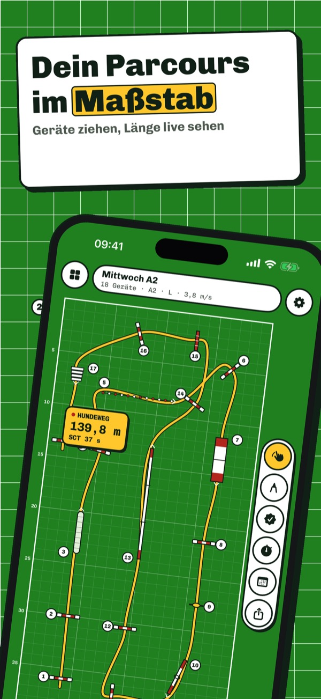
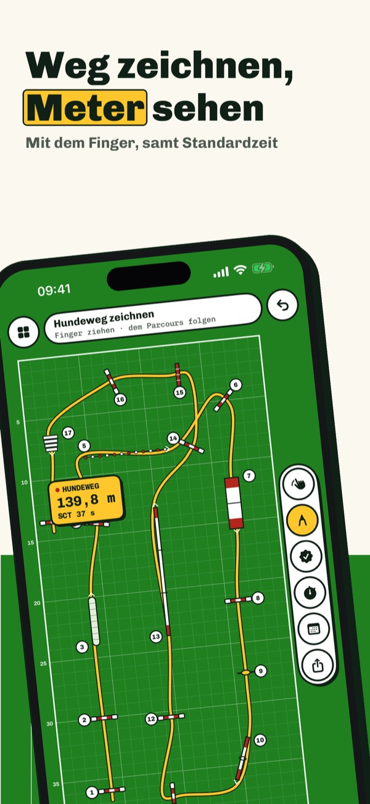
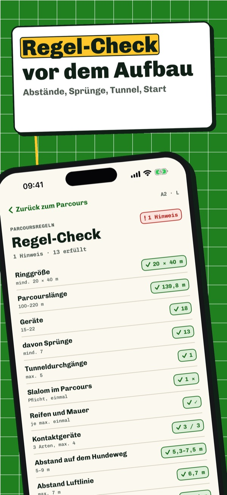
Maßstabsgetreuer Ring (20 × 40 m oder eigene Maße) mit 1-m-Raster
Alle Geräte in Turniermaßen: Hürde, Mauer, Reifen, Weitsprung, Tunnel, A-Wand, Steg, Wippe, Slalom
Hundeweg mit dem Finger zeichnen: Länge und Standardzeit live
Hurdla is de parcoursplanner voor agilitytrainers en hondensporters. Sleep horden, tunnels, slalom, schutting, loopplank en wip in een ring op schaal, teken de lijn van je hond met je vinger en zie direct de lengte in meters en de standaardtijd. De regelcheck controleert afstanden en toestellen, het trainingsplan ordent je week.
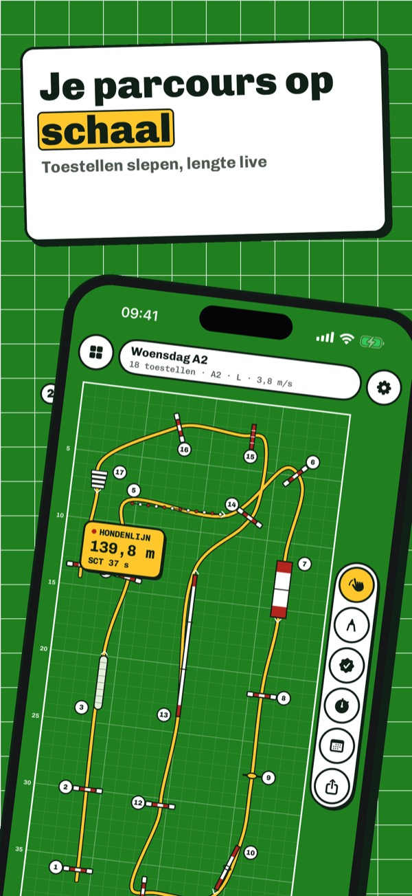
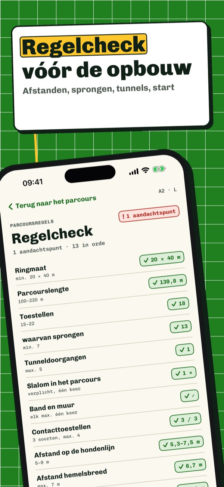
Ring op schaal (20 × 40 m of eigen maten) met raster van 1 m
Alle toestellen in wedstrijdmaten: horde, muur, band, verspringen, tunnel, schutting, loopplank, wip, slalom
Looplijn met je vinger tekenen: lengte en standaardtijd live
Hurdla est le planificateur de parcours pour moniteurs d’agility et passionnés de sport canin. Glissez haies, tunnels, slalom, palissade, passerelle et balançoire dans un ring à l’échelle, tracez la trajectoire de votre chien au doigt et voyez aussitôt la longueur en mètres et le temps de parcours standard. Le contrôle des règles vérifie distances et obstacles, le plan organise votre semaine.
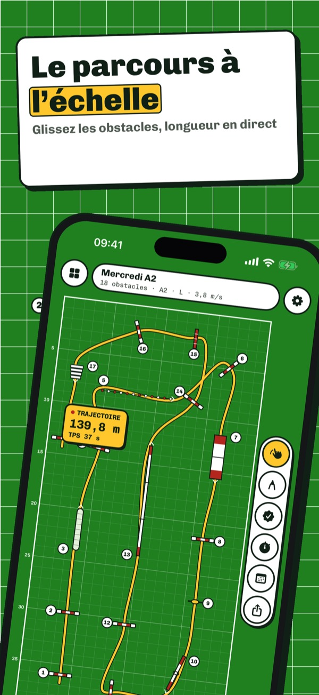
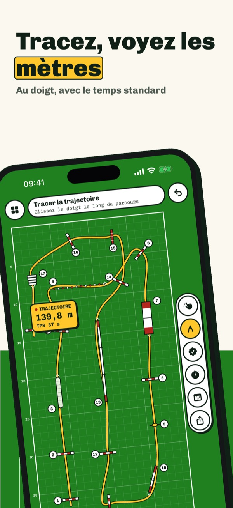
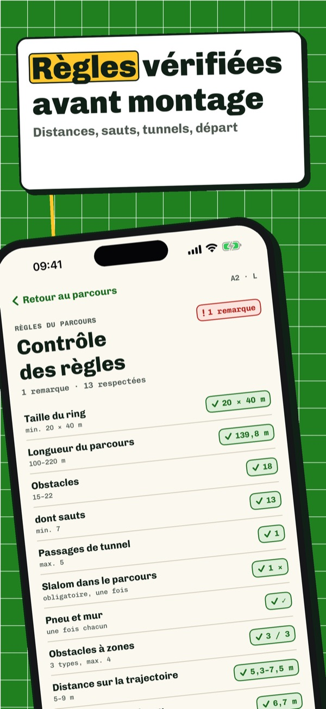
Ring à l’échelle (20 × 40 m ou vos mesures) avec grille de 1 m
Tous les obstacles aux mesures de concours : haie, mur, pneu, saut en longueur, tunnel, palissade, passerelle, balançoire, slalom
Trajectoire tracée au doigt : longueur et TPS en direct
Contrôle des règles : longueur, distances, sauts, tunnels, obstacles à zones
TPS et TMP pour chaque classe et chaque vitesse
Plan d’entraînement par semaine et journal des passages par chien
Partage en PDF ou en fichier de parcours avec votre groupe (menu de partage)
Hurdla är banplaneraren för agilitytränare och hundsportare. Dra hopphinder, tunnlar, slalom, A-hinder, balansbom och gungbräda in i en ring i skala, rita hundens väg med fingret och se direkt längden i meter och standardtiden. Regelkollen kontrollerar avstånd och hinder, träningsplanen ordnar veckan.
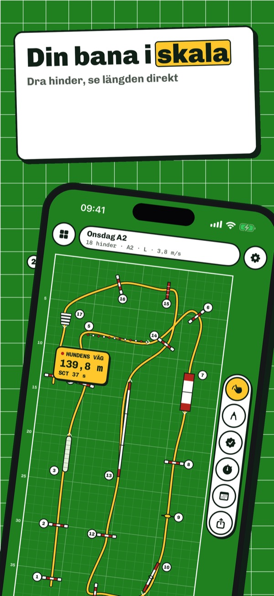
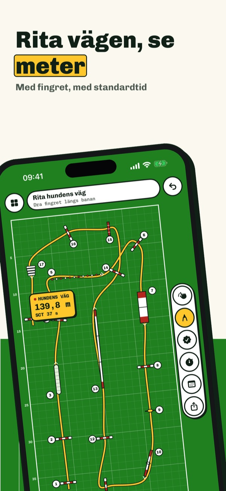
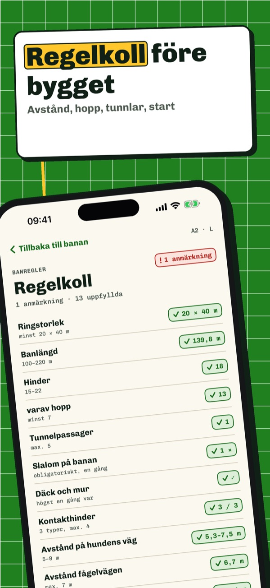
Ring i skala (20 × 40 m eller egna mått) med 1-meters rutnät
Alla hinder i tävlingsmått: hopphinder, mur, däck, långhopp, tunnel, A-hinder, balansbom, gungbräda, slalom
Rita hundens väg med fingret: längd och standardtid direkt
Hurdla on radansuunnittelija agilitykouluttajille ja koiraharrastajille. Vedä hyppyesteet, tunnelit, pujottelu, A-este, puomi ja keinu mittakaavassa olevaan kehään, piirrä koiran reitti sormella ja näe heti pituus metreinä ja ihanneaika. Sääntötarkistus katsoo välit ja esteet, harjoitusohjelma järjestää viikon.
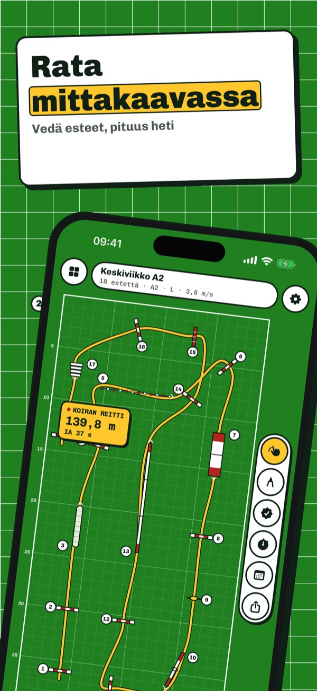
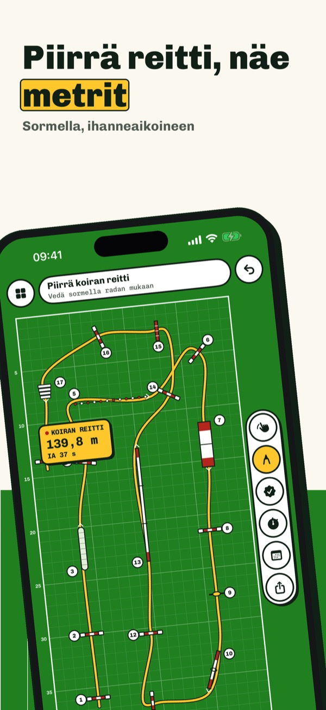
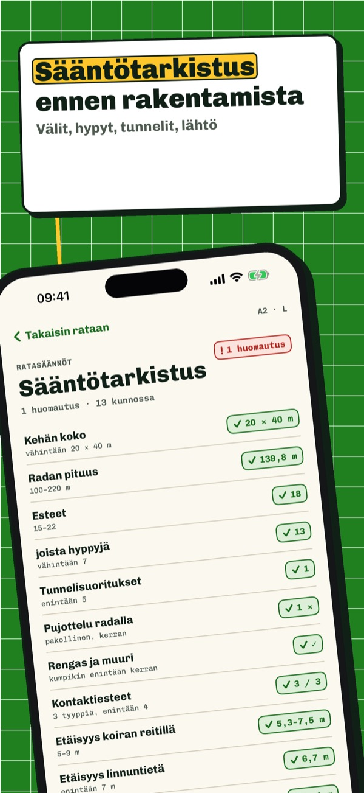
Kehä mittakaavassa (20 × 40 m tai omat mitat) ja 1 m:n ruudukko
Hurdla to planer torów dla trenerów agility i miłośników sportów z psem. Przeciągnij płotki, tunele, slalom, palisadę, kładkę i huśtawkę na ring w skali, narysuj palcem drogę psa i od razu zobacz długość w metrach oraz czas standardowy. Kontrola zasad sprawdza odległości i przeszkody, plan porządkuje tydzień.
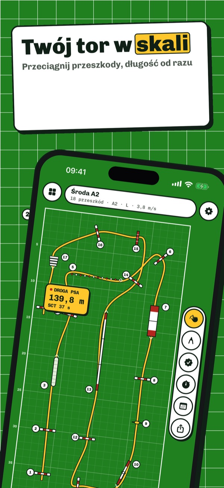
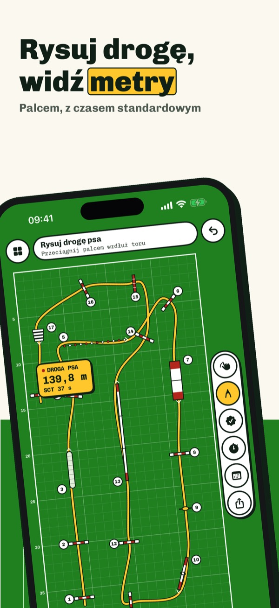
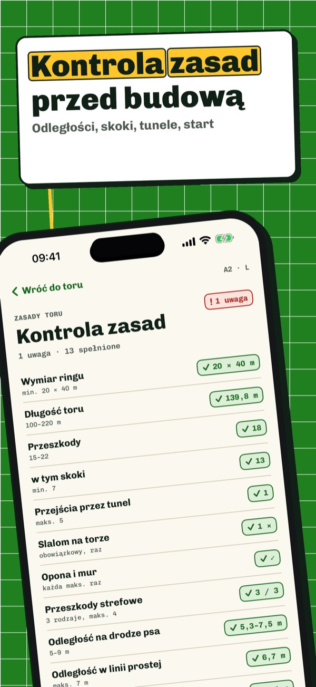
Ring w skali (20 × 40 m lub własne wymiary) z siatką co 1 m
Wszystkie przeszkody w wymiarach zawodów: płotek, mur, opona, skok w dal, tunel, palisada, kładka, huśtawka, slalom
Droga psa rysowana palcem: długość i czas standardowy na żywo
Kontrola zasad: długość toru, odległości, skoki, tunele, przeszkody strefowe
Czas standardowy i maksymalny dla każdej klasy i tempa
Plan treningów na tydzień i dziennik przebiegów dla każdego psa
Udostępnianie toru grupie jako PDF lub plik toru (menu udostępniania)